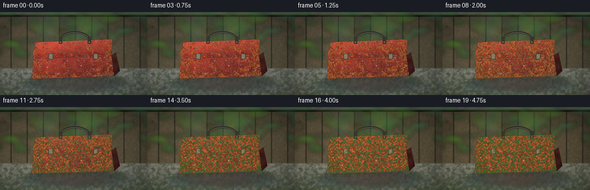
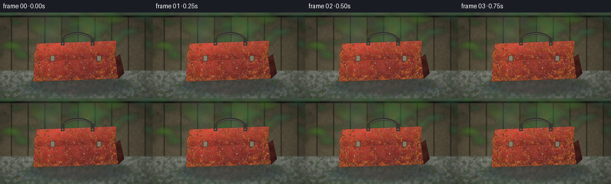
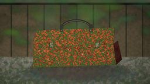
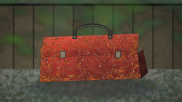
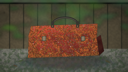
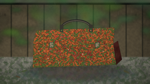

CODING AGENTS AS PIXEL WORLD MODELS
traex/DeepSeek-V4.1-Flash · material_0049
点击播放 · 原生 RGB 像素
逐轮保存的候选
回放视频、检查图与代码变化。
每份候选均可单独播放。实际图片检查记录在下方工具轨迹中。
候选 01播放与检查图
点击播放 · 原生 RGB 像素


展开代码变化
--- 上一保存版本
+++ 本次保存版本
@@ -0,0 +1,694 @@
+from pathlib import Path
+
+import cv2
+import numpy as np
+from PIL import Image, ImageDraw, ImageFilter
+from scipy.ndimage import distance_transform_edt, gaussian_filter
+
+import artifact_io
+
+
+OUT_W, OUT_H = 256, 144
+SCALE = 4
+W, H = OUT_W * SCALE, OUT_H * SCALE
+FRAME_COUNT = 20
+FPS = 4
+ROOT = Path(__file__).resolve().parent
+
+
+def clip8(values):
+ return np.clip(values, 0, 255).astype(np.uint8)
+
+
+def smoothstep(edge0, edge1, values):
+ x = np.clip((values - edge0) / max(edge1 - edge0, 1e-6), 0.0, 1.0)
+ return x * x * (3.0 - 2.0 * x)
+
+
+def resize_noise(rng, width, height, cell):
+ small_w = max(2, int(np.ceil(width / cell)) + 1)
+ small_h = max(2, int(np.ceil(height / cell)) + 1)
+ small = rng.random((small_h, small_w), dtype=np.float32)
+ return cv2.resize(small, (width, height), interpolation=cv2.INTER_CUBIC)
+
+
+def fbm(rng, width, height, base_cell, octaves=5, persistence=0.52):
+ field = np.zeros((height, width), np.float32)
+ total = 0.0
+ amplitude = 1.0
+ cell = base_cell
+ for _ in range(octaves):
+ field += amplitude * resize_noise(rng, width, height, cell)
+ total += amplitude
+ amplitude *= persistence
+ cell = max(2, cell * 0.48)
+ field /= total
+ lo, hi = np.percentile(field, (2, 98))
+ return np.clip((field - lo) / max(hi - lo, 1e-6), 0, 1)
+
+
+def scaled(points):
+ return [(int(x * SCALE), int(y * SCALE)) for x, y in points]
+
+
+def polygon_mask(points, blur=0.0):
+ image = Image.new("L", (W, H), 0)
+ ImageDraw.Draw(image).polygon(scaled(points), fill=255)
+ if blur:
+ image = image.filter(ImageFilter.GaussianBlur(blur * SCALE))
+ return np.asarray(image, np.float32) / 255.0
+
+
+def rectangle_mask(box, radius=0.0, blur=0.0):
+ image = Image.new("L", (W, H), 0)
+ draw = ImageDraw.Draw(image)
+ x0, y0, x1, y1 = [int(v * SCALE) for v in box]
+ if radius:
+ draw.rounded_rectangle((x0, y0, x1, y1), radius=int(radius * SCALE), fill=255)
+ else:
+ draw.rectangle((x0, y0, x1, y1), fill=255)
+ if blur:
+ image = image.filter(ImageFilter.GaussianBlur(blur * SCALE))
+ return np.asarray(image, np.float32) / 255.0
+
+
+def ellipse_mask(box, blur=0.0):
+ image = Image.new("L", (W, H), 0)
+ ImageDraw.Draw(image).ellipse(tuple(int(v * SCALE) for v in box), fill=255)
+ if blur:
+ image = image.filter(ImageFilter.GaussianBlur(blur * SCALE))
+ return np.asarray(image, np.float32) / 255.0
+
+
+def line_mask(segments, width=1.0, blur=0.5):
+ image = Image.new("L", (W, H), 0)
+ draw = ImageDraw.Draw(image)
+ for points in segments:
+ draw.line(scaled(points), fill=255, width=max(1, int(width * SCALE)), joint="curve")
+ if blur:
+ image = image.filter(ImageFilter.GaussianBlur(blur * SCALE))
+ return np.asarray(image, np.float32) / 255.0
+
+
+def composite(base, color, alpha):
+ alpha = np.asarray(alpha, np.float32)[..., None]
+ return base * (1.0 - alpha) + np.asarray(color, np.float32) * alpha
+
+
+def build_background():
+ rng = np.random.default_rng(19)
+ yy, xx = np.mgrid[0:H, 0:W].astype(np.float32)
+ yn = yy / H
+ xn = xx / W
+
+ # Damp, overcast garden backdrop.
+ top = np.zeros((H, W, 3), np.float32)
+ top[..., 0] = 92 + 25 * (1 - yn)
+ top[..., 1] = 105 + 24 * (1 - yn)
+ top[..., 2] = 87 + 18 * (1 - yn)
+ top *= (0.86 + 0.14 * fbm(rng, W, H, 90, 4))[..., None]
+
+ # Weathered vertical fence boards, softened by shallow depth of field.
+ boards = np.zeros_like(top)
+ board_w = 28
+ grain = fbm(rng, W, H, 10, 5)
+ for index, x0 in enumerate(range(-8, OUT_W + 20, board_w)):
+ x1 = x0 + board_w - 1
+ mask = rectangle_mask((x0, 8, x1, 101)) > 0
+ tone = rng.uniform(0.78, 1.12)
+ boards[mask, 0] = (83 * tone + 13 * grain[mask])
+ boards[mask, 1] = (72 * tone + 12 * grain[mask])
+ boards[mask, 2] = (54 * tone + 8 * grain[mask])
+ # Board shadow gaps and a few darker knots.
+ gap = rectangle_mask((x1 - 0.7, 8, x1 + 1.0, 101), blur=0.35)
+ boards = composite(boards, (31, 30, 23), gap * 0.72)
+ if index % 3 != 1:
+ kx = x0 + rng.uniform(5, board_w - 5)
+ ky = rng.uniform(21, 89)
+ knot = ellipse_mask((kx - 1.4, ky - 2.2, kx + 1.4, ky + 2.2), blur=0.6)
+ boards = composite(boards, (49, 40, 30), knot * 0.55)
+
+ fence_mask = rectangle_mask((-2, 5, 258, 104), blur=1.1)
+ fence_blur = gaussian_filter(boards, sigma=(2.0, 2.0, 0))
+ background = composite(top, fence_blur, fence_mask * 0.94)
+
+ # Out-of-focus foliage at the top and edges.
+ foliage = Image.new("RGBA", (W, H), (0, 0, 0, 0))
+ fdraw = ImageDraw.Draw(foliage, "RGBA")
+ leaf_rng = np.random.default_rng(71)
+ for _ in range(190):
+ x = leaf_rng.normal(130, 82)
+ y = leaf_rng.normal(10, 30)
+ if y > 76:
+ y = leaf_rng.uniform(4, 66)
+ rx = leaf_rng.uniform(4, 17) * SCALE
+ ry = leaf_rng.uniform(2, 9) * SCALE
+ green = (
+ int(leaf_rng.uniform(35, 82)),
+ int(leaf_rng.uniform(66, 126)),
+ int(leaf_rng.uniform(34, 70)),
+ int(leaf_rng.uniform(95, 205)),
+ )
+ fdraw.ellipse(
+ (x * SCALE - rx, y * SCALE - ry, x * SCALE + rx, y * SCALE + ry),
+ fill=green,
+ )
+ foliage = foliage.filter(ImageFilter.GaussianBlur(3.6 * SCALE))
+ foliage_np = np.asarray(foliage, np.float32)
+ fa = foliage_np[..., 3:4] / 255.0
+ background = background * (1 - fa * 0.84) + foliage_np[..., :3] * fa * 0.84
+
+ # Wet concrete foreground.
+ concrete_noise = fbm(rng, W, H, 16, 6)
+ fine_noise = fbm(rng, W, H, 4, 4)
+ concrete = np.zeros_like(background)
+ concrete[..., 0] = 92 + concrete_noise * 42 + fine_noise * 13
+ concrete[..., 1] = 94 + concrete_noise * 40 + fine_noise * 12
+ concrete[..., 2] = 87 + concrete_noise * 35 + fine_noise * 10
+ ground_mask = smoothstep(96, 99, yy / SCALE)
+ background = composite(background, concrete, ground_mask * 0.98)
+
+ # Slab seams and hairline cracks.
+ seam = line_mask([[(0, 118), (256, 113)], [(109, 98), (115, 144)]], 0.8, 0.65)
+ background = composite(background, (51, 54, 49), seam * 0.54)
+ cracks = line_mask(
+ [
+ [(12, 137), (32, 131), (43, 133), (54, 126)],
+ [(210, 103), (199, 112), (202, 122), (191, 130)],
+ [(145, 139), (151, 132), (149, 123)],
+ ],
+ 0.45,
+ 0.35,
+ )
+ background = composite(background, (48, 50, 45), cracks * 0.58)
+
+ # Mossy damp stains in the concrete.
+ moss_field = fbm(rng, W, H, 18, 5)
+ ground_bias = smoothstep(107, 139, yy / SCALE)
+ concrete_moss = smoothstep(0.66, 0.82, moss_field + ground_bias * 0.26)
+ concrete_moss *= ground_mask
+ background = composite(background, (55, 79, 43), concrete_moss * 0.46)
+
+ return background
+
+
+def build_geometry():
+ front = [(57, 79), (193, 74), (198, 111), (56, 116)]
+ lid_front = [(57, 70), (194, 65), (193, 76), (57, 81)]
+ lid_top = [(62, 52), (195, 47), (194, 66), (57, 71)]
+ right_side = [(193, 75), (201, 70), (208, 102), (198, 111)]
+ masks = {
+ "front": polygon_mask(front, blur=0.25),
+ "lid_front": polygon_mask(lid_front, blur=0.25),
+ "lid_top": polygon_mask(lid_top, blur=0.35),
+ "right_side": polygon_mask(right_side, blur=0.2),
+ }
+ masks["body"] = np.clip(masks["front"] + masks["lid_front"] + masks["lid_top"] + masks["right_side"], 0, 1)
+ masks["painted"] = np.clip(masks["front"] + masks["lid_front"] + masks["lid_top"], 0, 1)
+ return masks
+
+
+def paint_base(masks, t):
+ rng = np.random.default_rng(123)
+ yy, xx = np.mgrid[0:H, 0:W].astype(np.float32)
+ x_out, y_out = xx / SCALE, yy / SCALE
+ broad = fbm(rng, W, H, 28, 5)
+ fine = fbm(rng, W, H, 5, 4)
+
+ image = np.zeros((H, W, 3), np.float32)
+ for name in ("front", "lid_front", "lid_top", "right_side"):
+ mask = masks[name]
+ if name == "lid_top":
+ vertical = np.clip((y_out - 47) / 24, 0, 1)
+ base_r = 176 - 28 * vertical
+ base_g = 58 - 12 * vertical
+ base_b = 42 - 10 * vertical
+ light = 1.05
+ elif name == "right_side":
+ vertical = np.clip((y_out - 70) / 41, 0, 1)
+ base_r = 91 - 17 * vertical
+ base_g = 34 - 7 * vertical
+ base_b = 29 - 6 * vertical
+ light = 0.78
+ else:
+ top_y = 65 if name == "lid_front" else 74
+ bottom_y = 81 if name == "lid_front" else 116
+ vertical = np.clip((y_out - top_y) / (bottom_y - top_y), 0, 1)
+ base_r = 157 - 46 * vertical
+ base_g = 48 - 14 * vertical
+ base_b = 37 - 10 * vertical
+ light = 1.0
+ horizontal = np.clip((x_out - 58) / 140, 0, 1)
+ highlight = np.exp(-((horizontal - 0.13) / 0.24) ** 2)
+ texture = (broad - 0.5) * 24 + (fine - 0.5) * 11
+ fade = 0.10 * t
+ paint = np.stack(
+ [
+ (base_r + highlight * 35 + texture) * (1 - fade),
+ (base_g + highlight * 8 + texture * 0.55) * (1 - fade * 0.45),
+ (base_b + highlight * 5 + texture * 0.45) * (1 - fade * 0.35),
+ ],
+ axis=-1,
+ )
+ paint *= light
+ image = image * (1 - mask[..., None]) + paint * mask[..., None]
+ return image
+
+
+def build_scratch_field(masks):
+ rng = np.random.default_rng(44)
+ front_lines = []
+ for _ in range(28):
+ x = rng.uniform(61, 194)
+ y = rng.uniform(76, 111)
+ length = rng.uniform(2, 12)
+ angle = rng.uniform(-0.5, 0.45)
+ front_lines.append([(x, y), (x + length * np.cos(angle), y + length * np.sin(angle))])
+ front_lines.extend(
+ [
+ [(72, 83), (70, 101), (72, 109)],
+ [(158, 78), (159, 91), (157, 106)],
+ [(112, 80), (111, 96)],
+ [(185, 79), (187, 96), (186, 110)],
+ ]
+ )
+ top_lines = [[(79, 61), (97, 59)], [(151, 56), (178, 53)], [(121, 58), (140, 57)]]
+ scratch = line_mask(front_lines + top_lines, 0.55, 0.32)
+ scratch *= masks["painted"]
+ return np.clip(scratch, 0, 1)
+
+
+def rust_layer(masks, scratches, t):
+ rng = np.random.default_rng(208)
+ yy, xx = np.mgrid[0:H, 0:W].astype(np.float32)
+ x_out, y_out = xx / SCALE, yy / SCALE
+ coarse = fbm(rng, W, H, 18, 6)
+ detail = fbm(rng, W, H, 4, 4)
+
+ body = masks["body"]
+ dist = distance_transform_edt(body > 0.45) / SCALE
+ edge = np.exp(-dist / 9.0)
+
+ spots = np.zeros((H, W), np.float32)
+ seed_points = [
+ (59, 105, 24, 0.95),
+ (196, 84, 21, 1.0),
+ (73, 78, 17, 0.72),
+ (122, 77, 22, 0.78),
+ (175, 76, 17, 0.74),
+ (64, 82, 14, 0.68),
+ (190, 108, 18, 0.72),
+ (108, 109, 13, 0.52),
+ (143, 68, 11, 0.58),
+ ]
+ for sx, sy, radius, strength in seed_points:
+ spots += strength * np.exp(-(((x_out - sx) ** 2 + (y_out - sy) ** 2) / (2 * radius**2)))
+ spots = np.clip(spots, 0, 1)
+
+ vertical_streak = gaussian_filter(
+ (fbm(rng, W, H, 2.5, 4) - 0.5) * masks["painted"], sigma=(5.0, 0.6)
+ )
+ vertical_streak = np.clip((vertical_streak - 0.12) * 1.4, 0, 1)
+ bottom = smoothstep(89, 116, y_out)
+ potential = (
+ 0.44 * coarse
+ + 0.23 * detail
+ + 0.22 * edge
+ + 0.29 * spots
+ + 0.17 * np.clip(scratches * 2.8, 0, 1)
+ + 0.11 * vertical_streak
+ + 0.10 * bottom
+ )
+ potential *= masks["painted"]
+ threshold = 0.74 - 0.39 * t
+ rust = smoothstep(threshold, threshold + 0.065, potential)
+ rust *= masks["painted"]
+
+ # Rust blooms more densely along lid seams and the lower rim.
+ seam_band = np.exp(-((y_out - (70 - 0.07 * (x_out - 58))) / 2.3) ** 2)
+ rim_band = np.exp(-((y_out - (112 - 0.02 * (x_out - 56))) / 3.2) ** 2)
+ band = np.clip(seam_band + rim_band, 0, 1)
+ band_rust = smoothstep(0.35, 0.8, coarse + band * (0.26 + 0.46 * t))
+ rust = np.clip(rust + band * band_rust * (0.25 + 0.6 * t), 0, 1)
+ rust *= masks["painted"]
+
+ rust_noise = fbm(rng, W, H, 7, 5)
+ rust_color = np.zeros((H, W, 3), np.float32)
+ rust_color[..., 0] = 104 + 96 * rust_noise
+ rust_color[..., 1] = 49 + 55 * rust_noise
+ rust_color[..., 2] = 27 + 24 * rust_noise
+ dark_pits = smoothstep(0.73, 0.9, detail)
+ rust_color *= (0.66 + 0.34 * (1 - dark_pits))[..., None]
+ rust_color[..., 0] += 20 * smoothstep(0.62, 0.9, coarse)
+ return rust, rust_color
+
+
+def toolbox_layer(masks, t, background):
+ paint = paint_base(masks, t)
+ scratches = build_scratch_field(masks)
+ rust, rust_color = rust_layer(masks, scratches, t)
+
+ # Paint chips expose dull galvanized steel before turning rust brown.
+ rng = np.random.default_rng(88)
+ chip_noise = fbm(rng, W, H, 5, 5)
+ edge_dist = distance_transform_edt(masks["painted"] > 0.4) / SCALE
+ edge_chip = np.exp(-edge_dist / 2.2)
+ chip_threshold = 0.82 - 0.12 * t
+ chip = smoothstep(chip_threshold, chip_threshold + 0.055, chip_noise + edge_chip * 0.28 + scratches * 0.6)
+ chip *= masks["painted"]
+ metal = np.stack(
+ [
+ 80 + chip_noise * 50,
+ 84 + chip_noise * 48,
+ 79 + chip_noise * 43,
+ ],
+ axis=-1,
+ )
+ paint = paint * (1 - chip[..., None] * 0.72) + metal * chip[..., None] * 0.72
+ paint = paint * (1 - rust[..., None]) + rust_color * rust[..., None]
+
+ # Vertical damp staining and a wet sheen on upward-facing metal.
+ yy, xx = np.mgrid[0:H, 0:W].astype(np.float32)
+ x_out, y_out = xx / SCALE, yy / SCALE
+ streak_positions = [(73, 2.1), (91, 1.4), (122, 2.8), (150, 1.6), (181, 2.4)]
+ damp = np.zeros((H, W), np.float32)
+ for sx, width in streak_positions:
+ damp += np.exp(-((x_out - sx) / width) ** 2) * smoothstep(74, 114, y_out)
+ damp = gaussian_filter(damp, sigma=(1.5, 0.35))
+ damp *= masks["front"] * (0.17 + 0.12 * t)
+ paint = paint * (1 - damp[..., None]) + np.array([55, 38, 30], np.float32) * damp[..., None]
+
+ top_glow = masks["lid_top"] * np.clip(1 - (y_out - 47) / 22, 0, 1) * (0.12 - 0.04 * t)
+ paint += top_glow[..., None] * np.array([98, 58, 41], np.float32)
+
+ # Lid and body edges.
+ edge_lines = line_mask(
+ [
+ [(57, 71), (194, 66)],
+ [(56, 81), (193, 76)],
+ [(56, 116), (198, 111)],
+ [(62, 52), (195, 47)],
+ [(57, 70), (62, 52)],
+ [(195, 47), (194, 66)],
+ ],
+ 0.8,
+ 0.32,
+ )
+ edge_shadow = line_mask(
+ [
+ [(56, 81), (193, 76)],
+ [(56, 116), (198, 111)],
+ [(194, 66), (193, 76)],
+ ],
+ 1.2,
+ 0.5,
+ )
+ paint = composite(paint, (53, 29, 24), edge_shadow * 0.55)
+ paint = composite(paint, (207, 100, 70), edge_lines * 0.20 * (1 - t))
+
+ # Toolbox shadow is composited into the scene before the object.
+ shadow = ellipse_mask((46, 105, 218, 137), blur=4.0)
+ shadow *= 0.56
+ scene = composite(background, (28, 29, 24), shadow)
+ body_alpha = np.clip(masks["body"] * 1.2, 0, 1)
+ scene = scene * (1 - body_alpha[..., None]) + paint * body_alpha[..., None]
+
+ # Rivets and seams.
+ rivet_image = Image.new("RGBA", (W, H), (0, 0, 0, 0))
+ rdraw = ImageDraw.Draw(rivet_image, "RGBA")
+ rivets = [(66, 85), (83, 84), (112, 83), (139, 82), (166, 81), (188, 80)]
+ for x, y in rivets:
+ cx, cy = x * SCALE, y * SCALE
+ r = 1.05 * SCALE
+ rdraw.ellipse((cx - r, cy - r, cx + r, cy + r), fill=(39, 29, 24, 210))
+ rdraw.ellipse((cx - r * 0.55, cy - r * 0.65, cx + r * 0.35, cy + r * 0.15), fill=(164, 99, 70, 150))
+ rivet_np = np.asarray(rivet_image, np.float32)
+ ra = rivet_np[..., 3:4] / 255.0
+ scene = scene * (1 - ra) + rivet_np[..., :3] * ra
+
+ return scene, masks, rust
+
+
+def add_hardware(scene, t):
+ # Dark steel carrying handle.
+ handle = Image.new("RGBA", (W, H), (0, 0, 0, 0))
+ draw = ImageDraw.Draw(handle, "RGBA")
+ draw.arc(
+ (103 * SCALE, 33 * SCALE, 157 * SCALE, 64 * SCALE),
+ 188,
+ 352,
+ fill=(44, 43, 39, 255),
+ width=int(4.0 * SCALE),
+ )
+ draw.arc(
+ (105 * SCALE, 35 * SCALE, 155 * SCALE, 62 * SCALE),
+ 190,
+ 350,
+ fill=(112, 102, 87, 205),
+ width=int(1.15 * SCALE),
+ )
+ for x in (105, 155):
+ draw.rounded_rectangle(
+ ((x - 3.1) * SCALE, (43 - 1.2 * t) * SCALE, (x + 3.1) * SCALE, 55 * SCALE),
+ radius=int(1.2 * SCALE),
+ fill=(54, 50, 43, 255),
+ )
+ draw.ellipse(
+ ((x - 1.1) * SCALE, 51 * SCALE, (x + 1.1) * SCALE, 53.3 * SCALE),
+ fill=(153, 112, 79, 190),
+ )
+ handle_np = np.asarray(handle, np.float32)
+ ha = handle_np[..., 3:4] / 255.0
+ scene = scene * (1 - ha) + handle_np[..., :3] * ha
+
+ # Two front clasps.
+ for cx in (88, 166):
+ clasp = Image.new("RGBA", (W, H), (0, 0, 0, 0))
+ cdraw = ImageDraw.Draw(clasp, "RGBA")
+ x0, y0, x1, y1 = (cx - 4.0) * SCALE, 72 * SCALE, (cx + 4.0) * SCALE, 82 * SCALE
+ cdraw.rounded_rectangle((x0, y0, x1, y1), radius=int(1.3 * SCALE), fill=(57, 55, 48, 245))
+ cdraw.rounded_rectangle(
+ (x0 + 0.9 * SCALE, y0 + 0.8 * SCALE, x1 - 0.9 * SCALE, y1 - 0.9 * SCALE),
+ radius=int(1.0 * SCALE),
+ fill=(137, 128, 107, 225),
+ )
+ cdraw.rectangle(
+ ((cx - 1.2) * SCALE, (y1 - 3.2) * SCALE, (cx + 1.2) * SCALE, (y1 + 0.8) * SCALE),
+ fill=(67, 58, 48, 245),
+ )
+ cdraw.line(
+ ((cx - 2.2) * SCALE, (y0 + 1.4) * SCALE, (cx + 2.2) * SCALE, (y0 + 1.4) * SCALE),
+ fill=(219, 200, 156, 150),
+ width=max(1, int(0.55 * SCALE)),
+ )
+ # Clasps collect rust earlier than broad panels.
+ if t > 0.16:
+ cdraw.ellipse(
+ ((cx + 0.8) * SCALE, (y1 - 2.1) * SCALE, (cx + 3.7) * SCALE, (y1 + 0.8) * SCALE),
+ fill=(121 + int(30 * t), 61, 29, int(150 * t)),
+ )
+ clasp_np = np.asarray(clasp, np.float32)
+ ca = clasp_np[..., 3:4] / 255.0
+ scene = scene * (1 - ca) + clasp_np[..., :3] * ca
+ return scene
+
+
+def add_moss_and_debris(scene, masks, t):
+ rng = np.random.default_rng(333)
+ yy, xx = np.mgrid[0:H, 0:W].astype(np.float32)
+ x_out, y_out = xx / SCALE, yy / SCALE
+ moss_noise = fbm(rng, W, H, 9, 5)
+ fine = fbm(rng, W, H, 3, 4)
+ lower_bias = smoothstep(101, 116, y_out)
+ edge = np.exp(-distance_transform_edt(masks["painted"] > 0.4) / (2.4 * SCALE))
+ moss = smoothstep(0.65 - 0.22 * t, 0.82 - 0.12 * t, moss_noise + lower_bias * 0.22 + edge * 0.16)
+ moss *= masks["painted"] * smoothstep(0.18, 0.78, t)
+ moss_color = np.stack(
+ [
+ 38 + fine * 31,
+ 72 + fine * 48,
+ 33 + fine * 24,
+ ],
+ axis=-1,
+ )
+ scene = scene * (1 - moss[..., None] * 0.84) + moss_color * moss[..., None] * 0.84
+
+ # Fresh moss creeping up from the concrete around the feet.
+ ground_moss = smoothstep(0.58, 0.74, fbm(rng, W, H, 14, 5) + smoothstep(108, 137, y_out) * 0.22)
+ ground_moss *= smoothstep(112, 120, y_out) * (0.2 + 0.6 * t)
+ ground_moss *= (1 - masks["body"] * 0.85)
+ scene = composite(scene, (58, 83, 43), ground_moss * 0.34)
+
+ # Small wet leaves blown against the toolbox and ground.
+ leaves = Image.new("RGBA", (W, H), (0, 0, 0, 0))
+ ldraw = ImageDraw.Draw(leaves, "RGBA")
+ leaf_specs = [
+ (42, 122, 5.5, 2.0, 18, (73, 87, 42, 210)),
+ (216, 124, 6.0, 2.2, -24, (92, 79, 38, 215)),
+ (202, 117, 4.2, 1.7, 36, (54, 87, 45, 220)),
+ (31, 132, 4.6, 1.8, -16, (102, 71, 34, 205)),
+ ]
+ for x, y, rx, ry, angle, color in leaf_specs:
+ leaf = Image.new("RGBA", (int(rx * 2 * SCALE + 8), int(ry * 2 * SCALE + 8)), (0, 0, 0, 0))
+ ld = ImageDraw.Draw(leaf)
+ ld.ellipse((4, 4, rx * 2 * SCALE, ry * 2 * SCALE), fill=color)
+ leaf = leaf.rotate(angle, resample=Image.Resampling.BICUBIC, expand=True)
+ leaves.alpha_composite(leaf, (int(x * SCALE - leaf.width / 2), int(y * SCALE - leaf.height / 2)))
+ leaves_np = np.asarray(leaves, np.float32)
+ la = leaves_np[..., 3:4] / 255.0
+ scene = scene * (1 - la) + leaves_np[..., :3] * la
+ return scene
+
+
+def add_water(scene, masks, t, frame_index):
+ rng = np.random.default_rng(901)
+ yy, xx = np.mgrid[0:H, 0:W].astype(np.float32)
+ x_out, y_out = xx / SCALE, yy / SCALE
+
+ # A shallow puddle and red reflection under the chest.
+ puddle = ellipse_mask((19, 115, 239, 141), blur=5.2)
+ puddle *= smoothstep(112, 124, y_out)
+ puddle *= 0.42 + 0.12 * t
+ water_color = np.stack(
+ [
+ 61 + 22 * fbm(rng, W, H, 18, 4),
+ 77 + 20 * fbm(rng, W, H, 16, 4),
+ 79 + 20 * fbm(rng, W, H, 22, 4),
+ ],
+ axis=-1,
+ )
+ scene = scene * (1 - puddle[..., None]) + water_color * puddle[..., None]
+ reflection = ellipse_mask((62, 115, 201, 137), blur=3.0)
+ reflection *= np.exp(-((x_out - 128) / 68) ** 2) * (0.16 + 0.08 * t)
+ scene = composite(scene, (105, 42, 33), reflection)
+
+ # Ripples and broken sky reflections.
+ ripple = np.zeros((H, W), np.float32)
+ for j in range(10):
+ cx = 28 + j * 23 + rng.uniform(-7, 7)
+ cy = 120 + rng.uniform(0, 15)
+ rx = rng.uniform(5, 18)
+ ry = rng.uniform(0.45, 1.2)
+ band = np.exp(-((((x_out - cx) / rx) ** 2 + ((y_out - cy) / ry) ** 2) - 1) ** 2)
+ ripple += band * rng.uniform(0.2, 0.55)
+ ripple *= puddle
+ ripple *= 0.12 + 0.06 * np.sin(frame_index * 0.8 + t * 9)
+ scene = scene * (1 - ripple[..., None]) + np.array([147, 162, 155], np.float32) * ripple[..., None]
+
+ # Water droplets: a few stay pinned, others slide a little each step.
+ droplets = Image.new("RGBA", (W, H), (0, 0, 0, 0))
+ ddraw = ImageDraw.Draw(droplets, "RGBA")
+ fixed = [(67, 87), (82, 96), (117, 85), (141, 93), (176, 84), (188, 101), (100, 108)]
+ for index, (x, y) in enumerate(fixed):
+ slide = (frame_index * (0.25 + 0.07 * (index % 3))) % 9
+ if index % 3 == 1:
+ y += slide
+ if y > 110:
+ y = 82 + (y - 82) % 28
+ r = 0.85 + 0.25 * (index % 2)
+ ddraw.ellipse(
+ ((x - r) * SCALE, (y - r * 1.25) * SCALE, (x + r) * SCALE, (y + r * 1.25) * SCALE),
+ fill=(183, 193, 185, 105),
+ )
+ ddraw.ellipse(
+ ((x - r * 0.42) * SCALE, (y - r * 0.85) * SCALE, (x + r * 0.2) * SCALE, (y - r * 0.05) * SCALE),
+ fill=(239, 237, 215, 150),
+ )
+ drop_np = np.asarray(droplets, np.float32)
+ da = drop_np[..., 3:4] / 255.0
+ scene = scene * (1 - da) + drop_np[..., :3] * da
+
+ # Intermittent, fine rain. Its spacing moves to read as live weather rather than object motion.
+ rain_strength = 0.0
+ if 2 <= frame_index <= 15:
+ rain_strength = 0.10 + 0.10 * np.sin((frame_index - 2) / 13 * np.pi)
+ rain = Image.new("RGBA", (W, H), (0, 0, 0, 0))
+ rdraw = ImageDraw.Draw(rain, "RGBA")
+ rrng = np.random.default_rng(719)
+ for _ in range(42):
+ x = rrng.uniform(0, OUT_W)
+ y = (rrng.uniform(0, OUT_H) + frame_index * rrng.uniform(2.5, 7.5)) % OUT_H
+ length = rrng.uniform(2.5, 7.0)
+ alpha = int(80 * rain_strength / 0.2)
+ rdraw.line(
+ (x * SCALE, y * SCALE, (x + 0.8) * SCALE, (y + length) * SCALE),
+ fill=(190, 205, 204, alpha),
+ width=max(1, int(0.22 * SCALE)),
+ )
+ rain_np = np.asarray(rain, np.float32)
+ ra = rain_np[..., 3:4] / 255.0
+ scene = scene * (1 - ra) + rain_np[..., :3] * ra
+ return scene
+
+
+def grade_frame(scene, t, frame_index):
+ yy, xx = np.mgrid[0:H, 0:W].astype(np.float32)
+ x_out, y_out = xx / SCALE, yy / SCALE
+ rng = np.random.default_rng(500 + frame_index)
+
+ # Soft overcast key light from upper left.
+ light = 0.92 + 0.10 * (1 - x_out / OUT_W) + 0.07 * (1 - y_out / OUT_H)
+ scene *= light[..., None]
+ scene[..., 0] *= 0.98 + 0.05 * t
+ scene[..., 1] *= 0.99 + 0.02 * t
+ scene[..., 2] *= 1.01 - 0.04 * t
+
+ # Cooler humidity in the air and a gentle warm lift in later years.
+ haze = 0.035 + 0.025 * (1 - t)
+ scene = scene * (1 - haze) + np.array([105, 121, 113], np.float32) * haze
+
+ # Vignette keeps attention on the chest.
+ vignette = np.clip(
+ 1.04
+ - 0.34 * (((x_out - 128) / 150) ** 2 + ((y_out - 83) / 96) ** 2),
+ 0.68,
+ 1.02,
+ )
+ scene *= vignette[..., None]
+
+ # Film grain and very slight frame-to-frame exposure variation.
+ grain = rng.normal(0, 2.6, (H, W, 1)).astype(np.float32)
+ scene += grain
+ exposure = 1.0 + 0.012 * np.sin(frame_index * 0.9)
+ scene *= exposure
+ return np.clip(scene, 0, 255)
+
+
+def render_frame(frame_index, background, masks):
+ t = frame_index / (FRAME_COUNT - 1)
+ scene, masks, _ = toolbox_layer(masks, t, background)
+ scene = add_hardware(scene, t)
+ scene = add_moss_and_debris(scene, masks, t)
+ scene = add_water(scene, masks, t, frame_index)
+ scene = grade_frame(scene, t, frame_index)
+
+ image = Image.fromarray(clip8(scene), "RGB")
+ image = image.resize((OUT_W, OUT_H), Image.Resampling.LANCZOS)
+ return np.asarray(image, dtype=np.uint8)
+
+
+def write_mp4(frames):
+ writer = cv2.VideoWriter(
+ str(ROOT / "rgb_video.mp4"),
+ cv2.VideoWriter_fourcc(*"mp4v"),
+ FPS,
+ (OUT_W, OUT_H),
+ )
+ if not writer.isOpened():
+ return
+ for frame in frames:
+ writer.write(cv2.cvtColor(frame, cv2.COLOR_RGB2BGR))
+ writer.release()
+
+
+def main():
+ background = build_background()
+ masks = build_geometry()
+ frames = np.stack([render_frame(index, background, masks) for index in range(FRAME_COUNT)])
+ artifact_io.save(frames, ROOT)
+ write_mp4(frames)
+ print(f"Saved {frames.shape} RGB frames to {ROOT}")
+
+
+if __name__ == "__main__":
+ main()
可观测工具轨迹
实际执行的命令与返回图片。
命令 1exit 0
/bin/bash -c "sed -n '1,240p' prompt.txt"
命令 2exit 0
/bin/bash -c "sed -n '1,280p' GENERATION_RULES.md"
命令 3exit 0
/bin/bash -c 'cat task_spec.json'
命令 4exit 0
/bin/bash -c "find . -maxdepth 2 -type f -printf '%P\\n' | sort | sed -n '1,240p'"
命令 5exit 0
/bin/bash -c "sed -n '1,320p' artifact_io.py"
命令 6exit 0
/bin/bash -c "sed -n '1,260p' player_template.html"
命令 7exit 0
/bin/bash -c "python - <<'PY' import importlib.util for m in ['numpy','PIL','cv2','imageio','scipy','matplotlib']: print(m, bool(importlib.util.find_spec(m))) PY"
命令 8exit 0
/bin/bash -c 'command -v ffmpeg || true; command -v ffprobe || true'
命令 9exit 1
/bin/bash -c 'python generate.py'
命令 10exit 0
/bin/bash -c 'python generate.py'
命令 11exit 0
/bin/bash -c "python - <<'PY'
from pathlib import Path
import json, numpy as np
from PIL import Image
p=Path('.')
spec=json.loads((p/'task_spec.json').read_text())
z=np.load(p/'pixels.npz')['pixels']
print('pixels', z.shape, z.dtype)
print('pngs', len(list((p/'frames').glob('*.png'))))
ims=np.stack([np.asarray(Image.open(p/'frames'/f'{i:02d}.png')) for i in range(spec['frames'])])
print('images', ims.shape, ims.dtype)
print('range', int(ims.min()), int(ims.max()), 'mean', round(float(ims.mean()),2))
d=np.abs(np.diff(ims.astype(np.float32),axis=0)).mean(axis=(1,2,3))
print('adjacent MAE', np.round(d,2).tolist())
print('endpoint MAE', round(float(np.abs(ims[-1].astype(float)-ims[0]).mean()),2))
print('index bytes', (p/'index.html').stat().st_size)
print('mp4 bytes', (p/'rgb_video.mp4').stat().st_size)
PY"命令 12exit 0
/bin/bash -c "python - <<'PY'
import imageio.v2 as imageio
from pathlib import Path
r=imageio.get_reader(Path('rgb_video.mp4'))
frames=[f for f in r]
print('mp4 frames', len(frames), 'shape', frames[0].shape, 'fps', r.get_meta_data().get('fps'))
PY"命令 13exit 0
/bin/bash -c "find . -maxdepth 2 -type f -printf '%P %s bytes\\n' | sort"
命令 14exit 0
/bin/bash -c "python -m py_compile generate.py && echo 'generate.py compiles'"
命令 15exit 0
/bin/bash -c "python - <<'PY' from pathlib import Path import numpy as np from PIL import Image import generate bg=generate.build_background(); masks=generate.build_geometry() def metrics(i): t=i/19 s,_,_=generate.toolbox_layer(masks,t,bg) s=generate.add_hardware(s,t); s=generate.add_moss_and_debris(s,masks,t); s=generate.add_water(s,masks,t,i); s=generate.grade_frame(s,t,i) im=np.asarray(Image.fromarray(generate.clip8(s)).resize((256,144),Image.Resampling.LANCZOS)).astype(float) # box crop plus red/rust ratios and green ratio box=im[46:118,54:210] rr=(box[:,:,0]-box[:,:,1])/(box[:,:,0]+1) gg=(box[:,:,1]-box[:,:,0])/(box[:,:,1]+1) print(i, 'meanRGB', np.round(box.mean((0,1)),1), 'redness',round(rr.mean(),3),'greenness',round(gg.mean(),3)) for i in [0,5,10,15,19]: metrics(i) PY"
视觉工具实际返回图片 1

视觉工具实际返回图片 2

视觉工具实际返回图片 3

视觉工具实际返回图片 4

视觉工具实际返回图片 5

保存候选 1 份；完成命令 15 次；可验证图片返回 5 张。原始 API 响应与完整日志保留在本地。